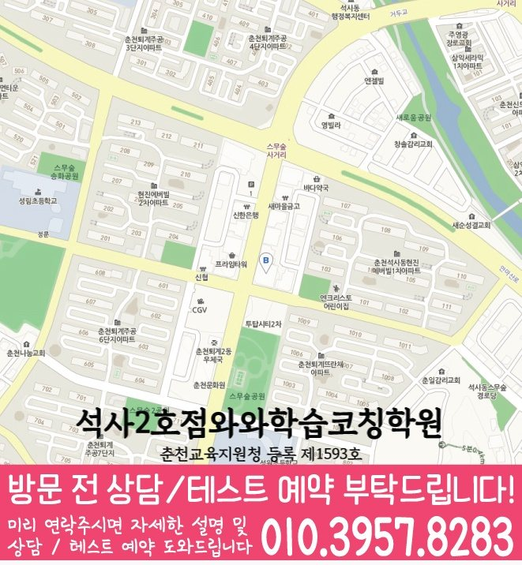

MIDDLE SCHOOL ENGLISH GUIDE
퇴계동 중2 영어학원
강원 춘천시 퇴계동 중2 영어학원 선택을 위해 와와학습코칭센터 석사점 공개 정보와 교과서·문법·독해·어휘·서술형 학습 및 상담 기준을 정리했습니다.
퇴계동강원 춘천시
확인개설 여부 상담 필요



핵심 답변
퇴계동 중2 영어학원, 무엇부터 확인해야 할까요?
퇴계동에서 중2 영어학원을 비교할 때는 교과서 진도만 보지 말고 어휘 재현, 문법 적용, 독해 근거, 서술형 수정과 시험 전 복습 기록을 함께 살펴야 합니다. 문법 문제는 맞히지만 서술형에서 어순과 형태를 자주 놓치는 학생이라면 특히 오답 재학습이 다른 영역으로 어떻게 연결되는지 확인하는 것이 좋습니다.
LOCAL ENGLISH STUDY GUIDE
강원 춘천시 퇴계동 중2 영어 학습 설계
춘천시 지역에서 중2 영어 내신을 준비한다면 교과서 본문 암기만으로 충분한지부터 다시 살펴야 합니다. 퇴계동 학생의 변형 문제 준비 기록에는 문장 구조와 문맥 속 단어 의미를 먼저 남깁니다. 이어 지문 근거와 서술형 수정 이유를 와와학습코칭센터 석사점의 다음 확인 항목으로 연결합니다. 퇴계동에서 이 기준을 적용할 때에는 와와학습코칭센터 석사점에 문의하기 전에는 누적 단어를 며칠 간격으로 다시 확인하고 있는지를 적어 두면 이 항목을 학생 상황과 연결해 설명받기 쉽습니다.
퇴계동 중2 영어에서 함께 관리할 네 영역
서술형은 수정 이유를 남기는 방식으로
한국어 뜻을 영어로 옮길 때 핵심 표현과 동사의 시제를 먼저 정한 뒤 문장 완성 후 조건 충족 여부를 검토합니다. 퇴계동 상담에서는 남춘천중의 실제 시험 범위를 준비해 이 기준이 현재 단원에도 맞는지 확인하는 편이 안전합니다.
독해는 근거 문장과 연결어까지 표시
독해 오답은 단어 부족, 문장 구조, 내용 연결과 선택지 해석 중 어디에서 시작됐는지 나눠 다음 지문에 적용합니다. 퇴계동에서는 학교 범위가 확정되기 전에는 누적 공백을, 확정된 뒤에는 교과서와 프린트 적용을 우선하는지 확인합니다.
어휘는 교과서 문맥과 함께 누적
시험 범위 단어는 당일 암기 결과보다 이틀 뒤와 주말에 문장 속 의미를 다시 떠올릴 수 있는지 확인합니다. 퇴계동에서 이 기준을 적용할 때에는 대룡중 시험지를 활용한다면 맞힌 문제 중에서도 근거를 설명하지 못한 항목을 따로 표시해 우연한 정답을 구분합니다.
문법을 답이 아닌 문장 구조로 확인
교과서 범위의 문법 이름을 외우는 데서 끝내지 않고 주어·동사와 수식 관계를 표시한 뒤, 같은 구조가 쓰인 새 문장에서 형태를 선택하게 합니다. 퇴계동에서 이 기준을 적용할 때에는 문법 문제는 맞히지만 서술형에서 어순과 형태를 자주 놓치는 학생이라면 이 항목의 난도를 높이기 전에 기본 문장에서 정확하게 재현되는 횟수를 먼저 확인하는 편이 좋습니다.
대룡중 등 학교 자료를 확인할 때의 기준
수업 가능 학교 정보에는 대룡중, 우석중, 남춘천중, 남춘천여중, 춘천중, 강원중 등이 포함됩니다. 같은 지역 안에서도 교과서와 평가 일정은 다를 수 있어 상담 시 실제 범위표를 함께 확인해야 합니다.
수행평가 일정
말하기·쓰기 과제의 일정과 평가 조건은 학교 공지를 기준으로 별도 계획에 반영합니다. 퇴계동 학생의 최근 답안에서 이 기준에 해당하는 문장을 한두 개 골라 두면 추상적인 수준 설명보다 시작점을 명확히 잡을 수 있습니다.
서술형 조건
문장 수, 핵심 표현, 어순과 문법 조건을 나누고 답안을 고친 이유까지 확인합니다. 퇴계동에서 이 기준을 적용할 때에는 와와학습코칭센터 석사점의 시간표와 함께 이 활동에 필요한 수업 외 복습 시간을 물어봐야 학생이 실제로 실행할 수 있는 분량을 정할 수 있습니다.
어휘 확인 범위
퇴계동의 어휘 범위는 본문 표제어에서 끝내지 않습니다. 변형 형태·숙어·유의어와 와와학습코칭센터 석사점 수업에서 추가된 표현까지 포함됐는지 따로 확인합니다. 퇴계동에서 이 기준을 적용할 때에는 공개된 학교명이 없는 경우에도 현재 교과서와 최근 답안을 기준으로 같은 확인 절차를 적용할 수 있으며 학교 정보는 임의로 만들지 않습니다.
오답 재학습을 중심으로 구성한 주간 수업 흐름
01. 어휘 재현 확인
뜻을 가리고 말하는 것뿐 아니라 문장 속 품사와 쓰임을 구분할 수 있는지 봅니다. 퇴계동에서 이 기준을 적용할 때에는 강원중 시험지를 활용한다면 맞힌 문제 중에서도 근거를 설명하지 못한 항목을 따로 표시해 우연한 정답을 구분합니다.
02. 현재 단원 연결
복원한 개념을 현재 교과서 문장과 학교 자료에 바로 적용합니다. 퇴계동에서 이 기준을 적용할 때에는 우석중 시험지를 활용한다면 맞힌 문제 중에서도 근거를 설명하지 못한 항목을 따로 표시해 우연한 정답을 구분합니다.
03. 문법 근거 쓰기
정답 형태를 선택한 근거를 짧게 적어 우연히 맞힌 문제를 구분합니다. 퇴계동 학습 계획에는 완료 여부뿐 아니라 며칠 뒤 해설 없이 다시 설명한 결과까지 남겨야 다음 복습량을 조정할 수 있습니다.
04. 시험 전 압축
단어·본문·문법·서술형의 남은 항목을 한 장의 확인표로 압축합니다. 이 기준은 퇴계동 중2 영어 선택을 위한 비교 항목이며 특정 점수 변화나 결과를 예상하게 하는 문구로 사용하지 않습니다.
퇴계동 학생의 답안에서 시작하는 영어 점검 순서
진단 신호
퇴계동에서는 문법 문제는 맞히지만 교과서 문장에서 같은 구조를 찾지 못하는지부터 살펴봅니다. 문법 문제는 맞히지만 서술형에서 어순과 형태를 자주 놓치는 학생에게 같은 기준을 적용하면 막힌 위치를 진도보다 구체적으로 나눌 수 있습니다.
첫 학습 행동
맞힌 독해 문제도 근거 문장을 표시하게 해 이해한 정답과 우연히 고른 정답을 구분합니다. 공개 자료에 기재된 강원중의 실제 교과서와 시험 범위는 상담 시 최신 자료로 대조합니다.
완료 판단
정답 개수 대신 같은 근거를 새 문장에서 설명할 수 있을 때 해당 항목을 완료로 표시합니다. 이 결과는 와와학습코칭센터 석사점 상담에서 다음 주 복습량을 조정하는 질문으로 사용합니다.
일정 배치
통학과 다른 과목 일정을 제외한 실제 영어 시간을 기준으로 과제 분량과 재확인 날짜를 정합니다. 와와학습코칭센터 석사점의 공개 위치 안내인 ‘지석로 85 강남프라자 7층 ( 투탑시티 카펠라 휘트니스 건너편 건물)’도 참고해 통학 시간을 계산하되 실제 이동 동선은 상담 전에 다시 확인합니다.
간격을 둔 재확인
퇴계동 학습 기록에서는 시간 제한이 없을 때와 있을 때의 독해 근거 정확도를 비교해 속도 문제와 이해 문제를 나눕니다. 강원중 자료의 현재 범위와 겹치는 문장부터 확인합니다.
근거 기록
교과서와 프린트의 완료 여부를 따로 표시해 어느 자료에서 복습 누락이 생겼는지 확인합니다. 이 기록을 와와학습코칭센터 석사점의 다음 수업 계획과 대조해 피드백이 실제 행동으로 이어지는지 봅니다.
상담 비교 기준
시험 대비 여부만 확인하지 않고 범위 발표 전후에 자료 우선순위가 어떻게 달라지는지 질문합니다. 강원 춘천시의 일정과 퇴계동 학생이 확보한 복습 시간을 함께 놓고 판단합니다.
와와학습코칭센터 석사점에 문의할 때는 “시험 범위 발표 전후로 수업 자료와 주간 계획이 어떻게 바뀌는지”를 확인하고, 누적 단어를 며칠 간격으로 다시 확인하고 있는지도 최근 답안과 함께 준비하면 수업 설명을 학생 상황에 맞춰 비교하기 쉽습니다.
퇴계동 중2 영어 학습 기록을 읽는 다섯 기준
답안에서 찾을 신호
퇴계동 기록에서는 서술형 원답안과 수정 답안을 나란히 놓고 달라진 조건을 표시합니다. 새 자료를 추가하기 전에 이미 받은 학교 자료의 미완료 항목을 먼저 확인합니다.
첫 수업의 행동
퇴계동 학생에게는 서술형은 정답을 베끼기 전에 문제 조건과 빠진 내용을 학생이 직접 표시합니다. 와와학습코칭센터 석사점 상담에서는 이 행동이 실제 피드백에 남는지 확인합니다.
완료와 재확인
퇴계동의 완료 기준은 다음과 같습니다. 수업 직후의 정답과 주중 재확인 결과가 모두 남아야 이해가 유지됐는지 판단합니다. 다음 확인일의 결과가 달라지면 퇴계동의 복습 순서부터 다시 조정합니다.
주간 일정 배치
퇴계동 주간표에는 학교 일정이 바뀌면 새 계획만 쓰지 않고 미룬 항목과 앞당긴 항목을 함께 기록합니다. 대룡중의 현재 일정은 학생이 가져온 자료로 다시 대조합니다.
상담에서 물을 질문
와와학습코칭센터 석사점에 문의할 때는 과제량보다 단어·본문·오답마다 다른 완료 기준이 기록되는지 살펴봅니다. 누적 단어를 며칠 간격으로 다시 확인하고 있는지도 최근 답안과 함께 확인합니다.
기록 해석
퇴계동의 영어 기록을 볼 때는 주간 완료율은 계획한 문제 수가 아니라 어휘·본문·오답별 통과 항목으로 계산합니다. 와와학습코칭센터 석사점에서는 이 기록이 다음 과제에 반영되는지도 확인합니다.
가정 복습 연결
퇴계동 학생의 실제 생활 시간에는 가정 복습은 긴 시간을 한 번 확보하기보다 수업 당일과 주중의 짧은 재현으로 나눕니다. 실행 여부는 다음 상담에서 계획표와 함께 확인합니다.
다음 주 조정
퇴계동의 다음 주 계획은 고정하지 않습니다. 서술형 조건 누락이 반복되면 제출 전 확인표를 다음 과제에도 동일하게 적용합니다. 조정 결과는 학생 답안으로 다시 확인합니다.
중2 영어 학습 계획은 교과서 진도와 학생의 실제 복습 시간을 함께 놓고 조정해야 합니다. 누적 단어를 며칠 간격으로 다시 확인하고 있는지를 상담 질문으로 준비하면 수업 방식을 더 구체적으로 비교할 수 있습니다. 영어 학년 정보가 비어 있는 지역입니다. 와와학습코칭센터 석사점 상담에서 중2 수업 여부와 시작 가능일을 먼저 확인하세요.
VERIFIED LOCAL FACTS
퇴계동 센터 정보와 수업 확인 항목
기존 전국학원 페이지와 공개 센터 자료에 있는 사실만 사용했으며, 기재되지 않은 학교나 운영 조건은 임의로 만들지 않았습니다.
강원특별자치도 춘천시 지석로 85 703호
춘천교육지원청 등록 제1593호
지석로 85 강남프라자 7층 ( 투탑시티 카펠라 휘트니스 건너편 건물)
공개 자료의 중학교 안내 · 6개
공개 자료의 영어 가능 학년
교습비 자료는 상담 시 확인해 주세요.상담 전 체크리스트
퇴계동 중2 영어학원 비교 전에 적어둘 내용
퇴계동 학생의 시험지에서 누적 단어를 며칠 간격으로 다시 확인하고 있는지를 확인할 수 있는 문장과 수정 흔적을 한두 개 표시합니다.
문법 문제는 맞히지만 서술형에서 어순과 형태를 자주 놓치는 학생에게 어휘·문법·독해·서술형 중 먼저 바꿀 영역을 하나 정하고 오답 재학습과의 연결을 메모합니다.
단어 의미 확인 → 교과서 문장 해석 → 문법 근거 표시 → 서술형 재작성이 퇴계동 학생의 실제 주중 일정에 들어가는지 완료 날짜까지 적어 계산합니다.
막힌 문장을 표시해 와와학습코칭센터 석사점 상담에서 확인하고 비슷한 문장을 혼자 다시 풀 날짜도 정합니다.
FAQ & PARENT VIEW
퇴계동 중2 영어학원 자주 묻는 질문과 학부모 상담 관점
화면 질문과 답변은 JSON-LD에도 동일하게 반영했습니다. 상담 관점은 특정 성과를 보장하는 후기가 아니라 비교에 참고할 수 있도록 재구성한 예시입니다.
퇴계동 중2 영어학원 상담 전에 어떤 영어 자료를 준비하면 좋나요?
최근 영어 시험지, 교과서와 학교 프린트, 현재 단어장, 틀린 서술형 답안을 준비하세요. 특히 누적 단어를 며칠 간격으로 다시 확인하고 있는지를 메모하면 시작점을 더 구체적으로 설명할 수 있습니다. 강원 춘천시 퇴계동의 통학·복습 시간을 함께 놓고 실행 가능한 분량인지 계산합니다. 이 답변은 퇴계동 페이지의 공개 정보 범위에서 정리했습니다.
퇴계동 중2 영어학원은 어떤 학생에게 맞는지 어떻게 판단하나요?
문법 문제는 맞히지만 서술형에서 어순과 형태를 자주 놓치는 학생이라면 설명 뒤 문장을 스스로 해석하고 고치는 과정이 있는지 확인해야 합니다. 서술형 답안은 내용·어순·문법 형태를 따로 확인해 수정 이유를 남깁니다. 공개 정보만으로 단정하지 않고 와와학습코칭센터 석사점의 현재 운영 내용과 학생 자료를 대조합니다. 이 답변은 퇴계동 페이지의 공개 정보 범위에서 정리했습니다.
와와학습코칭센터 석사점에서 중2 영어 수강이 가능한가요?
공개된 와와학습코칭센터 석사점 자료에는 영어 가능 학년이 기재되어 있지 않습니다. 퇴계동 중2 영어 개설 여부와 수업 일정은 상담을 통해 확인해야 합니다. 퇴계동에서는 누적 단어를 며칠 간격으로 다시 확인하고 있는지도 같은 상담표에 적어 비교 기준을 구체화합니다. 이 답변은 퇴계동 페이지의 공개 정보 범위에서 정리했습니다.
퇴계동의 학교별 영어 자료는 어떻게 확인하나요?
공개된 와와학습코칭센터 석사점 자료에는 대룡중, 우석중, 남춘천중, 남춘천여중, 춘천중, 강원중 등 6개 중학교가 기재되어 있습니다. 대룡중을 포함한 실제 교과서·시험 범위·일정은 상담할 때 최신 학교 자료로 다시 확인합니다. 대룡중 자료가 있다면 정답 표시보다 틀린 문장과 수정 흔적을 준비하는 것이 좋습니다. 이 답변은 퇴계동 페이지의 공개 정보 범위에서 정리했습니다.
퇴계동 중2 영어학원에서 교과서 본문 암기만 해도 충분한가요?
본문 암기는 출발점일 뿐입니다. 문장 구조, 핵심 표현, 문단 흐름과 변형 질문의 근거를 설명하고 조건을 바꾼 문장에도 적용할 수 있어야 합니다. 와와학습코칭센터 석사점 상담에서는 설명보다 실제 교재와 피드백 예시를 함께 확인하는 편이 안전합니다. 이 답변은 퇴계동 페이지의 공개 정보 범위에서 정리했습니다.
와와학습코칭센터 석사점 위치와 통학 시간은 무엇을 참고하면 되나요?
공개 위치 안내는 ‘지석로 85 강남프라자 7층 ( 투탑시티 카펠라 휘트니스 건너편 건물)’입니다. 실제 출입구와 이동 시간은 방문 전 다시 확인하고 주중 복습 가능 시간과 함께 계산하세요. 공개 정보만으로 단정하지 않고 와와학습코칭센터 석사점의 현재 운영 내용과 학생 자료를 대조합니다. 이 답변은 퇴계동 페이지의 공개 정보 범위에서 정리했습니다.
와와학습코칭센터 석사점 상담에서 시간표와 교습비는 어떻게 확인하나요?
공개 교습비 링크가 확인되지 않아 비용을 임의로 적지 않습니다. 주당 횟수, 수업 시각, 결석·보강 기준과 함께 상담에서 확인합니다. 와와학습코칭센터 석사점 상담에서는 설명보다 실제 교재와 피드백 예시를 함께 확인하는 편이 안전합니다. 이 답변은 퇴계동 페이지의 공개 정보 범위에서 정리했습니다.
RELATED GUIDES
퇴계동 중2 과목과 다른 지역 비교
같은 동네 수학 안내와 시군구·광역권을 우선한 영어 페이지를 상호 연결했습니다.